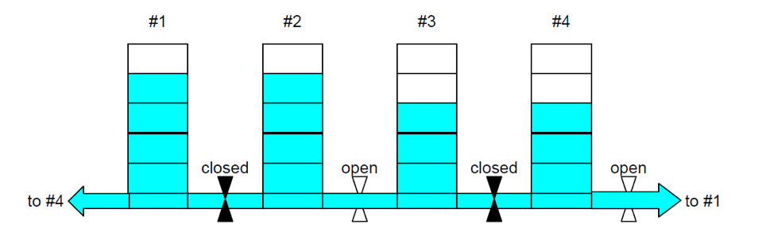

Problem made by Lockheed Martin, is CodeQuest 2017 Problem 18
This problem has a difficulty of 100
Launching rockets is a tricky business. Each launch vehicle is required to be fueled at a launch site. At our launch site, there are N identical large cylindrical tanks for storing fuel. The tanks are arranged in a circle on level ground. Each tank is connected to its two neighbors by means of a pipe situated at its base (tank 2 is connected to tanks 1 and 3, and so on). There is a valve between each adjacent pair of tanks. All valves are initially closed. All the outlets and the pipes are at the same level and can hold a negligible amount of fuel.
The volume in any tank is determined by measuring the height of the surface of the fuel above the level of the top of the outlets. If all valves (or all valves but one) are opened so that fuel can flow between the tanks, then the levels will eventually equalize.
Conversely, if all tanks are initially at the same level, no valves need be opened to equalize the levels. Thus it may be necessary to only open some of the valves to achieve this equalization result.
For example, consider the situation where we have N = 4 tanks, and the fuel level in these tanks starts at 4, 4, 3, and 3. The fuel levels will equalize if we open the valves between tanks #2 and #3 and between #4 and #1, as suggested by the following diagram:

Thus for this setup we need to open only two valves to achieve fuel equalization. Your job is to write a program that will calculate the minimum number of valves that must be opened at a given launch site to equalize their fuel levels.
The first line of the file Prob18.in.txt will contain a positive integer T denoting the number of test cases that follow. Each test case will have the following input:
• The first line contains a descriptive title, which is a string of letters or spaces no more than 200 characters long, containing at least 1 letter.
• The second line starts with the number of basins N where 3 ≤ N ≤ 200, a space, and then N integers in the range 0 to 99, separated by single spaces, representing the fuel levels in the tanks.
2
Cape Canaveral Launch Site
4 4 4 3 3
Vandenberg Launch Site
8 2 1 1 2 2 1 1 6
Output one line for each input scenario. The line consists of the first letter of each word in the descriptive title in upper case, followed by a colon, a space, and then the minimum number of valves that need to be opened to achieve equal heights in all tanks.
CCLS: 2
VLS: 5